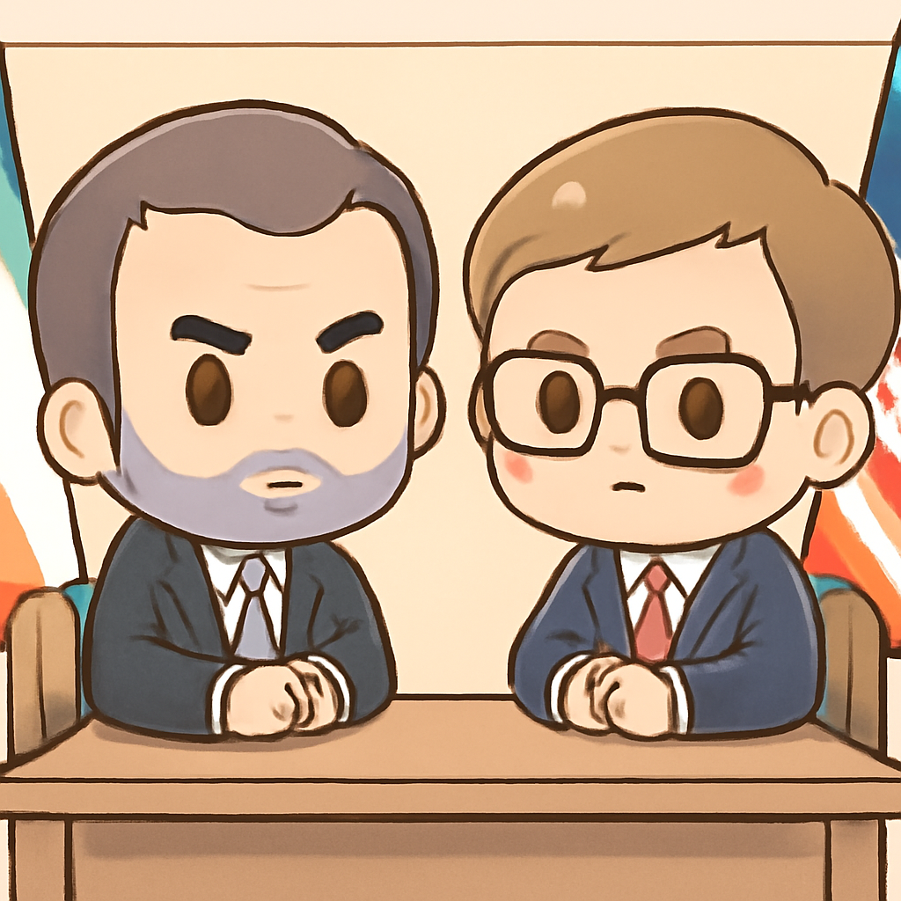
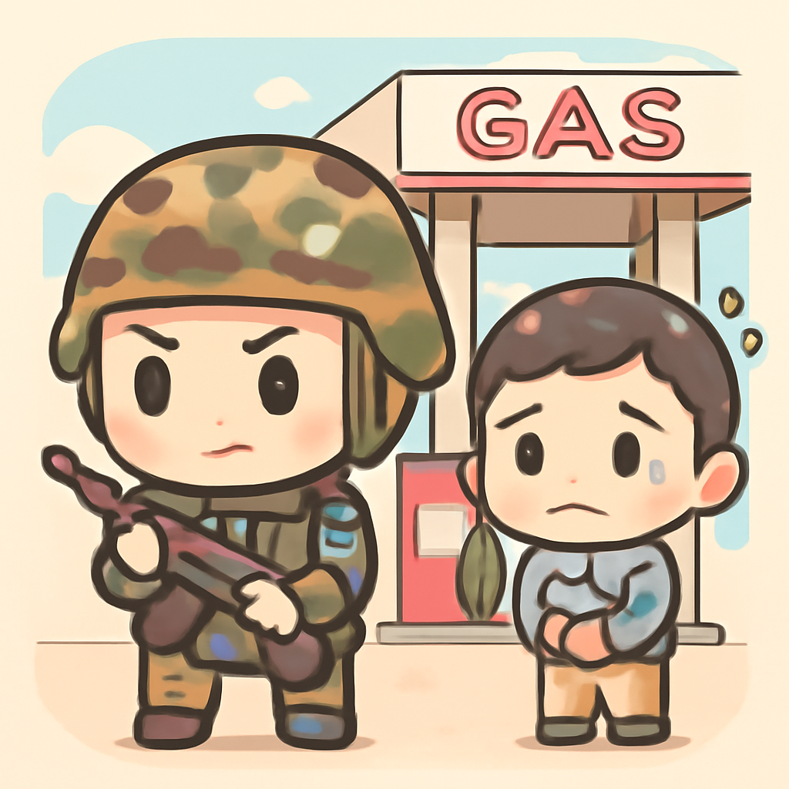
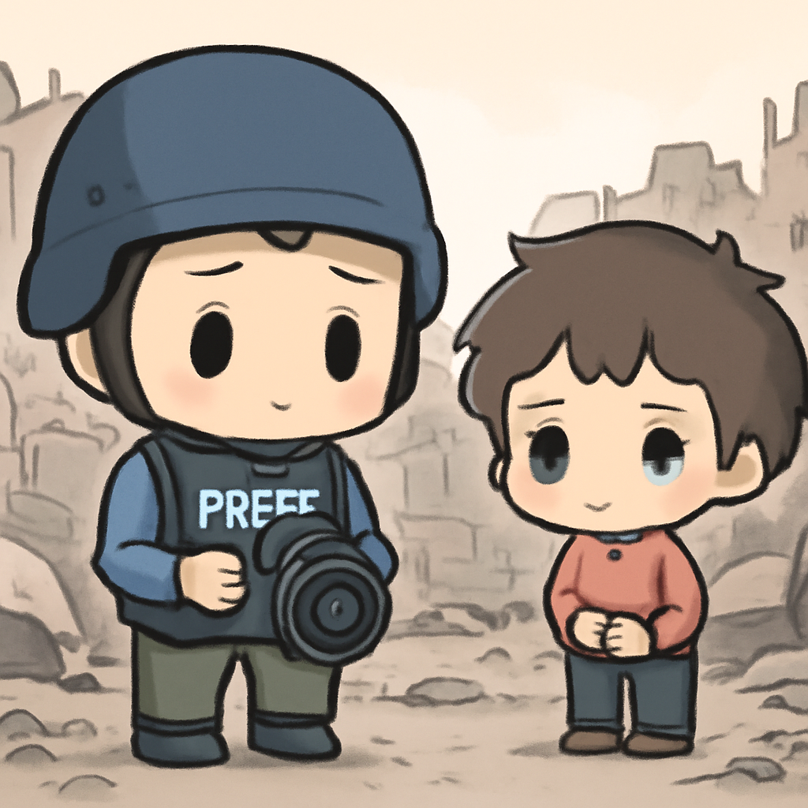

其一 · 伊朗 · 美伊首輪會談繼續進行
美伊雙方在瑞士進行關鍵外交會談。

在瑞士，正在進行的美伊會談是自達成協議以來的首次直接接觸。雖然美國總統未親自出席，但雙方仍在爭取和平，尤其是針對以色列與黎巴嫩真主黨的緊張局勢。這次會議的結果可能影響中東局勢，讓我們拭目以待。希望外交官們多喝水，保持清醒！
🔗 原始新聞 ↗
2026-06-22 · 以古觀今，以笑抗愁
美伊雙方在瑞士進行關鍵外交會談。

在瑞士，正在進行的美伊會談是自達成協議以來的首次直接接觸。雖然美國總統未親自出席，但雙方仍在爭取和平，尤其是針對以色列與黎巴嫩真主黨的緊張局勢。這次會議的結果可能影響中東局勢，讓我們拭目以待。希望外交官們多喝水，保持清醒！
🔗 原始新聞 ↗
烏克蘭攻擊導致俄佔克里米亞燃料短缺。

由於基輔的攻擊，克里米亞的燃料銷售已經停止，這使得當地的交通和生活受到影響。這場持續的衝突不僅影響了烏克蘭，也讓俄佔區的民眾感到苦不堪言。看來，這場戰爭不僅是軍事衝突，還是個大麻煩的經濟問題。
🔗 原始新聞 ↗
以色列空襲加薩，死傷人數攀升。

以色列軍方在加薩地區的空襲中造成六人死亡，其中包括一名阿爾賈澤記者。這起事件再次引發國際社會對中東衝突的關注，尤其是對媒體工作者的保護問題。這樣的暴力行為只會加深對話的難度，讓人不禁想，何時才能找到和平的出路？
🔗 原始新聞 ↗
英國工黨領袖面臨政治挑戰與辭職壓力。
英國工黨領袖基爾·斯塔默在黨內壓力下，正思考自己的政治未來。隨著內部不滿聲浪上升，這位領袖可能面臨艱難的選擇。英國政壇現在真的是危機四伏，讓人懷疑究竟誰能保持冷靜。
🔗 原始新聞 ↗
西班牙首相妻子因貪污將面臨審判。
西班牙首相的妻子貝戈尼亞·戈麥斯因涉嫌貪污及濫用職權，將面臨審判。此案引發了廣泛關注，可能會影響首相的政治形象。政治舞台上可真是風雲變幻，大家都在看誰會成為下個獨角戲的主角。
🔗 原始新聞 ↗